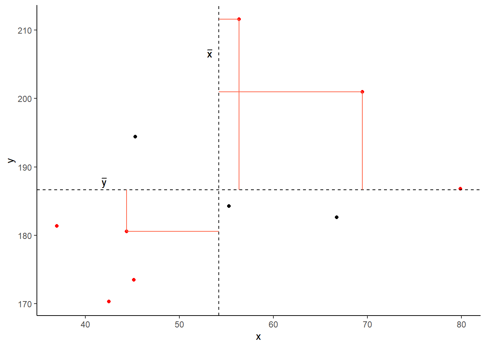
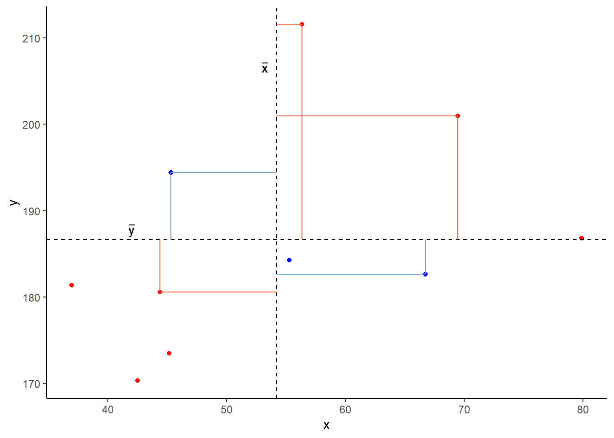
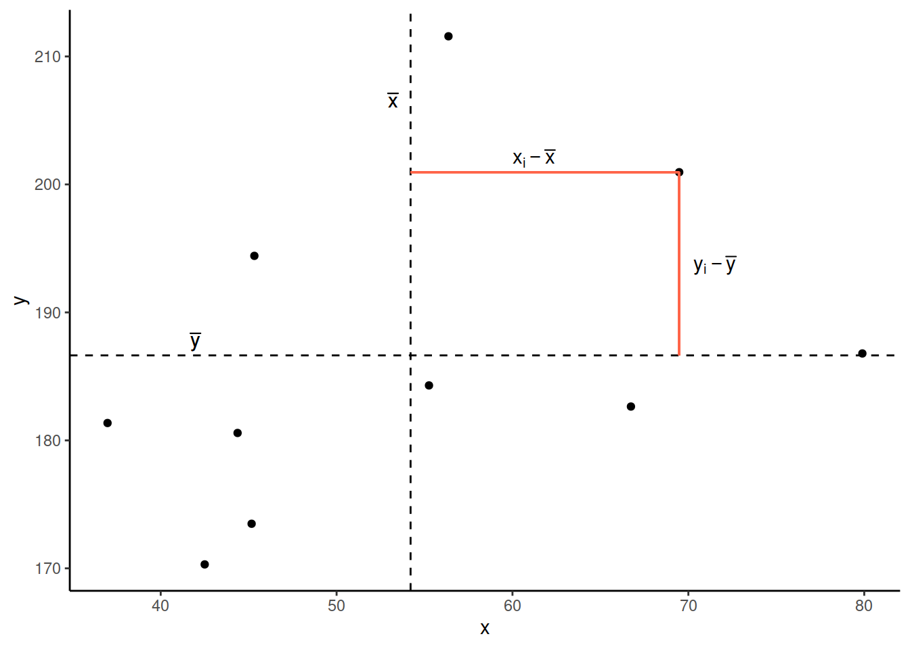
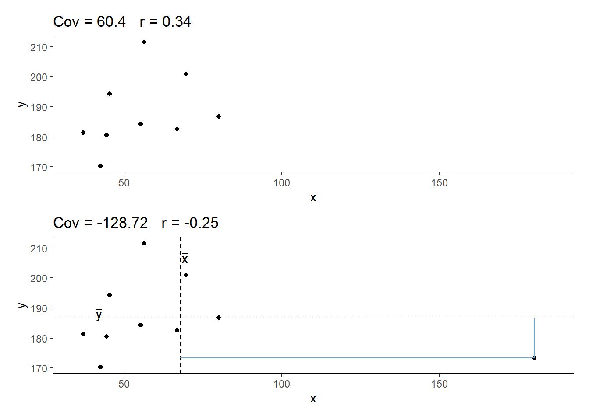
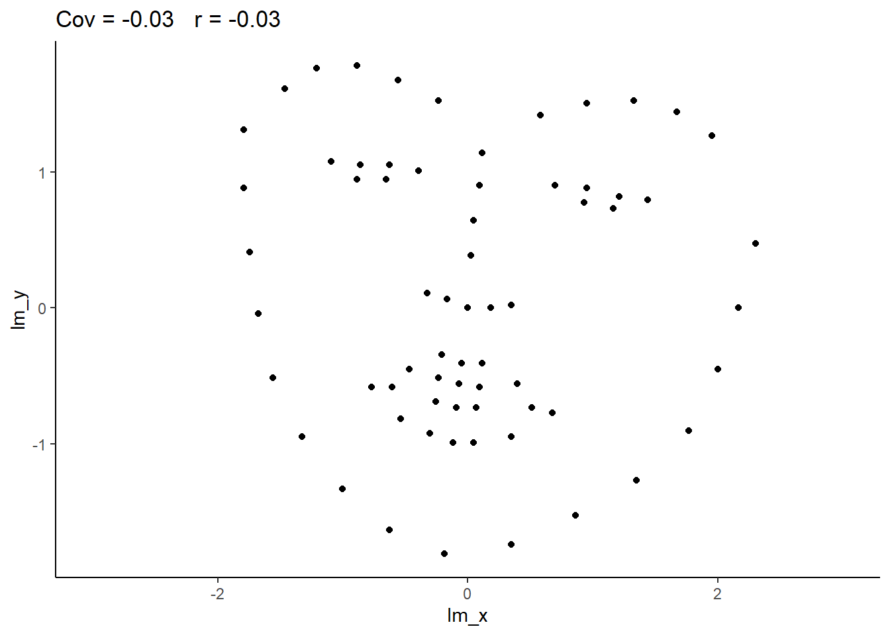
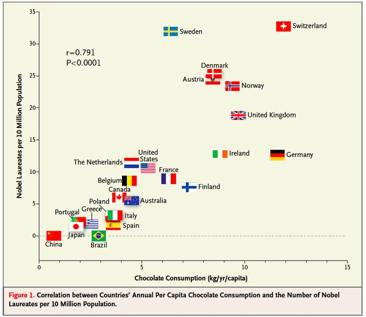

Our data for this walkthrough is from a (hypothetical) study on memory. Twenty participants studied passages of text (c500 words long), and were tested a week later. The testing phase presented participants with 100 statements about the text. They had to answer whether each statement was true or false, as well as rate their confidence in each answer (on a sliding scale from 0 to 100). The dataset contains, for each participant, the percentage of items correctly answered, and the average confidence rating. Participants’ ages were also recorded.
Let’s take a look at the relationships between the percentage of items answered correctly (recall_accuracy) and participants’ average self-rating of confidence in their answers (recall_confidence):
For participants who tended to be more confident in their answers, the percentage of items they correctly answered tends to be higher.
The older participants were, the lower the percentage of items they correctly answered tended to be.
Which relationship should we be more confident in and why?
Ideally, we would have some means of quantifying the strength and direction of these sorts of relationship. This is where we come to the two summary statistics which we can use to talk about the association between two numeric variables: Covariance and Correlation.
Covariance
Covariance is the measure of how two variables vary together. It is the change in one variable associated with the change in another variable.
For samples, covariance is calculated using the following formula:
\(x\) and \(y\) are two variables; e.g., age and recall_accuracy;
\(i\) denotes the observational unit, such that \(x_i\) is value that the \(x\) variable takes on the \(i\)th observational unit, and similarly for \(y_i\);
\(n\) is the sample size.
In R
We can calculate covariance in R using the cov() function. cov() can take two variables cov(x = , y = ).
cov(x = recalldata$recall_accuracy, y = recalldata$recall_confidence)
[1] 118.0768
Optional: Manually calculating covariance
Create 2 new columns in the memory recall data, one of which is the mean recall accuracy, and one which is the mean recall confidence.
# A tibble: 1 × 2
prod_sum n
<dbl> <int>
1 2243. 20
2243.46/ (20-1)
[1] 118.0768
Which is the same result as using cov():
cov(x = recalldata$recall_accuracy, y = recalldata$recall_confidence)
[1] 118.0768
Optional: Covariance explained visually
Consider the following scatterplot:

Now let’s superimpose a vertical dashed line at the mean of \(x\) (\(\bar{x}\)) and a horizontal dashed line at the mean of \(y\) (\(\bar{y}\)):

Now let’s pick one of the points, call it \(x_i\), and show \((x_{i}-\bar{x})\) and \((y_{i}-\bar{y})\).
Notice that this makes a rectangle.
As \((x_{i}-\bar{x})\) and \((y_{i}-\bar{y})\) are both positive values, their product - \((x_{i}-\bar{x})(y_{i}-\bar{y})\) - is positive.

In fact, for all these points in red, the product \((x_{i}-\bar{x})(y_{i}-\bar{y})\) is positive (remember that a negative multiplied by a negative gives a positive):
And for these points in blue, the product \((x_{i}-\bar{x})(y_{i}-\bar{y})\) is negative:
Now take another look at the formula for covariance:
It is the sum of all these products divided by \(n-1\). It is the average of the products!
Correlation - \(r\)
You can think of correlation as a standardized covariance. It has a scale from negative one to one, on which the distance from zero indicates the strength of the relationship.
Just like covariance, positive/negative values reflect the nature of the relationship.
The correlation coefficient is a standardised number which quantifies the strength and direction of the linear relationship between two variables. In a population it is denoted by \(\rho\), and in a sample it is denoted by \(r\).
We can calculate \(r\) using the following formula:
\[
r_{(x,y)}=\frac{\mathrm{cov}(x,y)}{s_xs_y}
\]
We can actually rearrange this formula to show that the correlation is simply the covariance, but with the values \((x_i - \bar{x})\) divided by the standard deviation (\(s_x\)), and the values \((y_i - \bar{y})\) divided by \(s_y\):
The correlation is the simply the covariance of standardised variables (variables expressed as the distance in standard deviations from the mean).
Properties of correlation coefficients
\(-1 \leq r \leq 1\)
The sign indicates the direction of association
positive association (\(r > 0\)) means that values of one variable tend to be higher when values of the other variable are higher
negative association (\(r < 0\)) means that values of one variable tend to be lower when values of the other variable are higher
no linear association (\(r \approx 0\)) means that higher/lower values of one variable do not tend to occur with higher/lower values of the other variable
The closer \(r\) is to \(\pm 1\), the stronger the linear association
\(r\) has no units and does not depend on the units of measurement
The correlation between \(x\) and \(y\) is the same as the correlation between \(y\) and \(x\)
In R
Just like R has a cov() function for calculating covariance, there is a cor() function for calculating correlation:
cor(x = recalldata$recall_accuracy, y = recalldata$recall_confidence)
[1] 0.6993654
Optional: Manually calculating correlation
We calculated above that \(\text{cov}(\text{recall-accuracy}, \text{recall-confidence})\) = 118.077.
To calculate the correlation, we can simply divide this by the standard deviations of the two variables \(s_{\text{recall-accuracy}} \times s_{\text{recall-confidence}}\)
cor(x = recalldata$recall_accuracy, y = recalldata$recall_confidence)
[1] 0.6993654
Correlation Test
Now that we’ve seen the formulae for covariance and correlation, as well as how to quickly calculate them in R using cov() and cor(), we can use a statistical test to establish the probability of finding an association this strong by chance alone.
Hypotheses
The hypotheses of the correlation test are, as always, statements about the population parameter (in this case the correlation between the two variables in the population - i.e., \(\rho\)).
Null Hypothesis:
\(H_0: \rho = 0\). There is not a linear relationship between \(x\) and \(y\) in the population.
Alternative Hypothesis:
\(H_1: \rho > 0\) There is a positive linear relationship between \(x\) and \(y\).
\(H_1: \rho < 0\) There is a negative linear relationship between \(x\) and \(y\).
\(H_1: \rho \neq 0\) There is a linear relationship between \(x\) and \(y\).
Test Statistic
The test statistic for this test here is another\(t\) statistic, the formula for which depends on both the observed correlation (\(r\)) and the sample size (\(n\)):
\[t = r \sqrt{\frac{n-2}{1-r^2}}\]
p-value
We calculate the p-value for our \(t\)-statistic as the long-run probability of a \(t\)-statistic with \(n-2\) degrees of freedom being less than, greater than, or more extreme in either direction (depending on the direction of our alternative hypothesis) than our observed \(t\)-statistic.
In R
We can test the significance of the correlation coefficient really easily with the function cor.test():
Pearson's product-moment correlation
data: recalldata$recall_accuracy and recalldata$recall_confidence
t = 4.1512, df = 18, p-value = 0.0005998
alternative hypothesis: true correlation is not equal to 0
95 percent confidence interval:
0.3719603 0.8720125
sample estimates:
cor
0.6993654
Optional: Manually conducting the correlation test
Or, if we want to calculate our test statistic manually:
#calculate rr =cor(recalldata$recall_accuracy, recalldata$recall_confidence)#get nn =nrow(recalldata)#calculate t tstat = r *sqrt((n -2) / (1- r^2))#calculate p-value for t, with df = n-2 2*(1-pt(tstat, df=n-2))
[1] 0.0005998222
Assumptions
For a test of Pearson’s correlation coefficient \(r\), we need to make sure a few conditions are met:
Both variables are quantitative
Both variables should be drawn from normally distributed populations.
The relationship between the two variables should be linear.
Cautions!
Correlation is an invaluable tool for quantifying relationships between variables, but must be used with care.
Below are a few things to be aware of when we talk about correlation.
Correlation can be heavily affected by outliers. Always plot your data!
The two plots below only differ with respect to the inclusion of one observation. However, the correlation coefficient for the two sets of observations is markedly different.

r = 0 means no linear association. The variables could still be otherwise associated. Always plot your data!
The correlation coefficient in Figure 1 below is negligible, suggesting no linear association. The word “linear” here is crucial - the data are very clearly related.

Figure 1: Unrelated data?
Similarly, take look at all the sets of data in Figure 2 below. The summary statistics (means and standard deviations of each variable, and the correlation) are almost identical, but the visualisations suggest that the data are very different from one another.
Figure 2: Datasaurus! From Matejka, J., & Fitzmaurice, G. (2017, May): Same stats, different graphs: generating datasets with varied appearance and identical statistics through simulated annealing.
You will have likely heard the phrase “correlation does not imply causation”. There is even a whole wikipedia entry devoted to the topic.
Just because you observe an association between x and y, we should not deduce that x causes y
An often cited paper which appears to fall foul of this error took a correlation between a country’s chocolate consumption and its number of nobel prize winners (see Figure 4) to suggest a causal relationship between the two (“chocolate intake provides the abundant fertile ground needed for the sprouting of Nobel laureates”):

Figure 4: Chocolate consumption causes more Nobel Laureates?